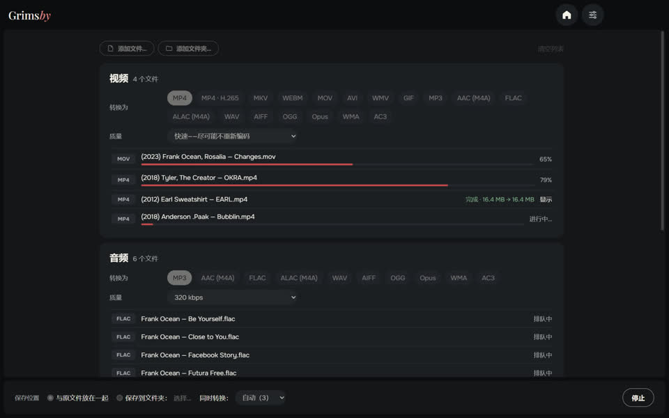
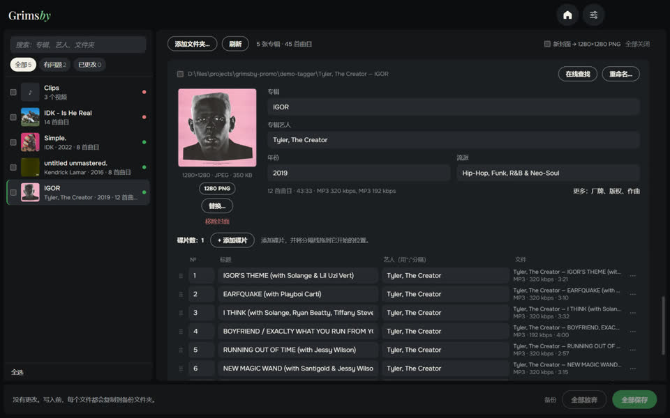

Grimsby Player
为你下载的音乐和 MV 打造的离线播放器
为下载和收藏音乐的人打造的播放器。选择音乐文件夹，你的收藏就会变成像流媒体一样的音乐库：按年份排列的专辑、艺人页面、专辑旁的 MV。所有内容都留在你的电脑上——无需账号、无需订阅、没有广告。
- 按发行年份排列的专辑，艺人页面汇集专辑、MV、演唱会和合作曲目
- MV、演唱会和专辑电影自动关联到专辑
- 无缝播放、音量均衡和 10 段均衡器
- 自动生成的智能电台歌单
- 收听与收藏统计、专辑统计和年度回顾
- 内置格式转换、重复文件查找和音乐库体检

Grimsby Converter
视频、音频、照片和文档，离线转换
直接在你的电脑上运行的文件转换器。把文件和整个文件夹混在一起拖进来：它们会自动分组，每组可设置自己的格式和质量，一键全部转换。不会上传任何文件。
- 视频、音频、照片、文档、表格和演示文稿，一个窗口全搞定
- 一次处理整个文件夹，自动分组
- 快速模式：几秒内把 MOV 转成 MP4，画质无损
- 数十种格式：从 DSD 音频、M4B 有声书到 Photoshop 的 PSD 和 Keynote
- 原文件不受影响；没有大小限制，没有水印
- 多个文件同时转换——处理器能承受多少就转多少


Grimsby Tagger
批量标签编辑：专辑、封面、文件名
按专辑而不是逐个文件工作的音乐库标签编辑器。选择一个文件夹，它会把文件归入专辑，用带封面的卡片展示每张专辑，并标出有问题的地方。全部改好后一键保存。
- 专辑自动整理：分碟、不同版本和零散文件
- 问题一目了然：空字段、值不统一、缺封面、乱码
- 根据文件名和文件夹名一键修复
- 在线查找专辑并把曲目与你的文件对应起来
- 按模板重命名文件和文件夹，可撤销
- 也支持视频：MP4、MKV、MOV 等——编辑标签和封面，不重新编码
